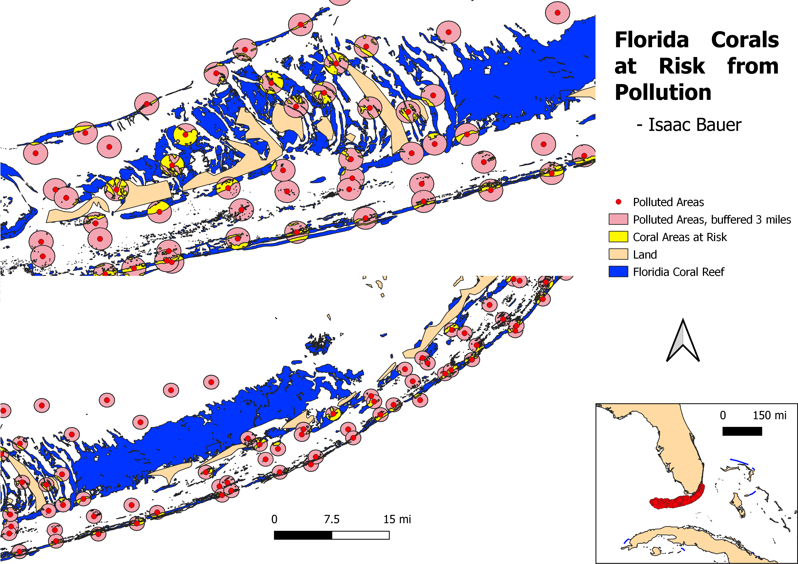

Which areas of Florida corals are at risk from ocean pollution?
The two geoprocessing tools that I used for this project were buffer and intersect. First, I buffered the sites that were found to have increased water pollution by 3 miles, which is assuming (conservatively) that the high levels of pollution in that one point will decrease the water quality in a 1.5 mile radius. Then, I used intersection to highlight the locations where corals and water pollution overlap, in order to show the areas where corals may be at risk.

Data
Coral
Pollution
Land